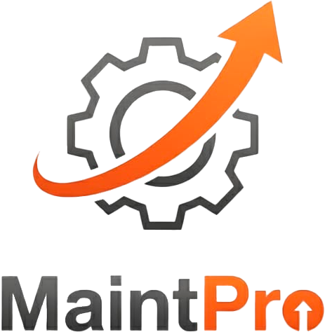

Gestão de Técnicos
Cadastro, acompanhamento de produtividade, escalas e organização da equipe.

Estamos desenvolvendo uma plataforma moderna para centralizar técnicos, chamados, suporte, ponto, entrada e saída de funcionários, tickets e processos operacionais em um único lugar.
Este domínio é a presença oficial do MaintPro para comunicação institucional e validação de publicação.
O objetivo do MaintPro é simplificar o dia a dia da equipe técnica e melhorar o controle da operação, da abertura de chamados até a entrega do atendimento.
Cadastro, acompanhamento de produtividade, escalas e organização da equipe.
Registro, priorização e acompanhamento completo de chamados e solicitações.
Controle de bater ponto, entrada, saída e histórico de jornada dos funcionários.
Gestão de tickets com status, responsáveis e visibilidade de toda a operação.